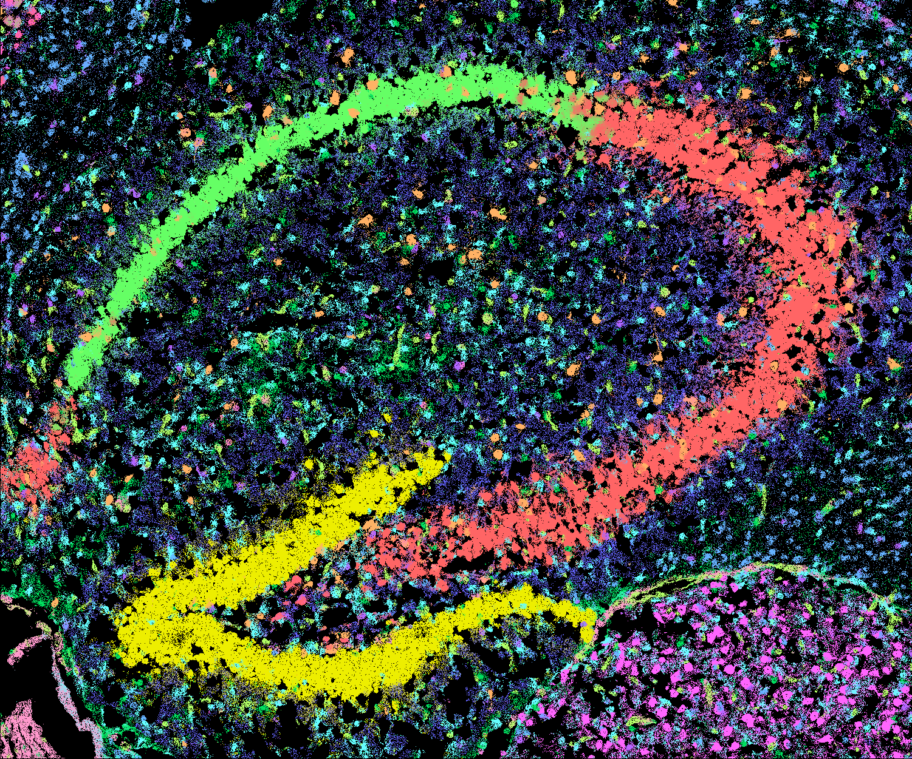

Vizgen MERSCOPE Starter Tutorial¶
Input Data¶
The input is a spatial gene expression (SGE) dataset from the adult mouse hippocampus, extracted by masking a coronal brain section (Slice Number: 2；Replicate Number: 1; file: detected_transcripts.csv) from Vizgen MERSCOPE Neuroscience Showcase.
File Format
The MERSCOPE input SGE includes one comma delimited text file with the following format:
CSV file format
1 2 3 4 | |
- Column 1: Unique numeric index for each transcript within a field of view (non-consecutive, ascending).
barcode_id: Zero-based index of the transcript barcode in the codebook; forms a composite key withfov.global_x: Transcript x coordinates (µm) in the experimental region; may be negative due to alignment.global_y: Transcript y coordinates (µm) in the experimental region; may be negative due to alignment.global_z: The index of the z-position. The position is a zero-indexed integer.x: The x-coordinate of the transcript (µm), within the coordinate space of the field of view.y: The y-coordinate of the transcript (µm), within the coordinate space of the field of view.fov: Zero-based field of view index; forms a composite key withbarcode_id.gene: Gene name associated with the transcript.
Data Access
The example data is hosted on Zenedo ().
Follow the commands below to download the example data.
1 2 3 4 | |
Set Up the Environment¶
Define paths to all required binaries and resources. Optionally, specify a fixed color map for consistent rendering.
1 2 3 4 5 6 7 8 9 10 11 12 13 14 15 16 17 18 19 20 21 22 | |
Define data ID and analysis parameters:
1 2 3 4 5 6 7 8 | |
How to Define Scaling Factors for MERSCOPE?
The MERSCOPE example data currently used here provides SGE in micrometer units. Use define scaling factor from coordinate to micrometer as 1.
SGE Format Conversion¶
Convert the raw input to the unified SGE format. See more details in Reference page.
1 2 3 4 5 6 7 8 9 10 | |
| Parameter | Required | Type | Description |
|---|---|---|---|
--platform |
required | string | Platform (options: "10x_visium_hd", "seqscope", "10x_xenium", "bgi_stereoseq", "cosmx_smi", "vizgen_merscope", "pixel_seq", "generic") |
--in-csv |
required | string | Path to the input TSV/CSV file |
--units-per-um |
required | float | Scale to convert coordinates to microns (default: 1.0) |
--out-dir |
required | string | Output directory for the converted SGE files |
--makefn |
string | File name for the generated Makefile (default: sge_convert.mk) |
|
--exclude-feature-regex |
regex | Pattern to exclude control features | |
--sge-visual |
flag | Enable SGE visualization step (generates diagnostic image) (default: FALSE) |
|
--spatula |
string | Path to the spatula binary (default: spatula) |
|
--n-jobs |
int | Number of parallel jobs for processing (default: 1) |
FICTURE analysis¶
Compute spatial factors using punkst (FICTURE2 mode). See more details in Reference page.
1 2 3 4 5 6 7 8 9 10 11 12 13 14 15 | |
| Parameter | Required | Type | Description |
|---|---|---|---|
--main |
required 1 | flag | Enable cartloader to run all five steps |
--in-transcript |
required | string | Path to input transcript-level SGE file |
--out-dir |
required | string | Path to output directory |
--width |
required | int or comma-separated list | LDA training hexagon width(s) |
--n-factor |
required | int or comma-separated list | Number of LDA factors |
--makefn |
string | File name for the generated Makefile (default: run_ficture2.mk ) |
|
--in-feature |
string | Path to input feature file | |
--in-minmax |
string | Path to input coordinate min/max file | |
--cmap-file |
string | Path to color map file | |
--exclude-feature-regex |
regex | Pattern to exclude features | |
--spatula |
string | Path to the spatula binary (default: spatula) |
|
--ficture2 |
string | Path to the punkst directory (defaults to punkst repository within submodules directory of cartloader) |
|
--n-jobs |
int | Number of parallel jobs (default: 1) |
|
--threads |
int | Number of threads per job (default: 1) |
1: cartloader requires the user to specify at least one action. Available actions includes: --tile to run tiling step; --segment to run segmentation step; --init-lda to run LDA training step; --decode to run decoding step; --summary to run summarization step; --main to run all above five actions.
cartloader Compilation¶
Generate pmtiles and web-compatible tile directories. See more details in Reference page.
1 2 3 4 5 6 7 8 9 10 | |
| Parameter | Required | Type | Description |
|---|---|---|---|
--fic-dir |
required | string | Path to the input directory containing FICTURE2 output |
--out-dir |
required | string | Path to the output directory for PMTiles and web tiles |
--id |
required | string | Dataset ID used for naming outputs and metadata |
--makefn |
string | File name for the generated Makefile (default: run_cartload2.mk) |
|
--spatula |
string | Path to the spatula binary (default: spatula) |
|
--pmtiles |
string | Path to the pmtiles binary (default: pmtiles) |
|
--tippecanoe |
string | Path to the tippecanoe binary (default: tippecanoe) |
|
--n-jobs |
int | Number of parallel jobs (default: 1) |
|
--threads |
int | Number of threads per job (default: 1) |
Upload to Data Repository¶
Choose a data repository to host/share your output
cartloader supports two upload options (AWS and Zenodo) for storing PMTiles of SGE and spatial factors in a data repository.
Choose the one that best suits your needs.
AWS Uploads¶
Upload the generated cartloader outputs to your designated AWS S3 directory:
1 2 3 4 5 6 7 8 | |
| Parameter | Required | Type | Description |
|---|---|---|---|
--in-dir |
required | string | Path to the input directory containing the cartloader compilation output |
--s3-dir |
required | string | Path to the target S3 directory for uploading |
--aws |
string | Path to the AWS CLI binary | |
--n-jobs |
int | Number of parallel jobs |
Zenodo Uploads¶
Upload the generated cartloader outputs to your designated Zenodo deposition or a new deposition.
1 2 3 4 5 6 7 8 9 10 | |
| Parameter | Required | Type | Description |
|---|---|---|---|
--in-dir |
required | string | Path to the input directory containing the cartloader compilation output |
--upload-method |
required | string | Method to determine which files to upload. Options: all to upload all files in --in-dir; catalog to upload files listed in a catalog YAML file, user_list to upload files explicitly listed via --in-list |
--catalog-yaml |
string | Required if --upload-method catalog. Path to the catalog.yaml file generated in run_cartload2. If absent, will use the catalog.yaml in the input directory specified by --in-dir. |
|
--zenodo-token |
required | string | Path to your Zenodo access file |
--create-new-deposition |
flag | a new Zenodo deposition will be created. | |
--title |
required | string | Required if --create-new-deposition. Title for the new Zenodo deposition. |
--creators |
required | list of str | List of creators in "Lastname, Firstname" format. |
Output Data¶
See more details of output at the Reference pages for run_ficture2 and run_cartload2.
Spatial Factor Inference from FICTURE¶
Below is an example of spatial factor inference results produced by FICTURE using a training width of 12, 12 factors, a fit width of 12, and an anchor resolution of 6.

| Factor | RGB | Weight | PostUMI | TopGene_pval | TopGene_fc | TopGene_weight |
|---|---|---|---|---|---|---|
| 0 | 255,101,101 | 0.30225 | 799546 | Slc17a7,Epha4,Amigo2,Kit,Syt4,Epha6,Anxa11,Npy2r,Nrp1,Adora1,Chrm3,Gpr26,Ackr1,Gpr158,Celsr2,Gabbr2,Gpr22,Chrm1,Adra1d,Epha5 | Avpr1b,Blank-85,Kit,Amigo2,Blank-158,Hcrtr2,Npy6r,Blank-49,Oxtr,Npy2r,Gpr26,Hcrtr1,Blank-146,Cckbr,Adgrg7,Mrgprb1,Blank-28,Adgrf4,Blank-32,Blank-151 | Slc17a7,Epha4,Cx3cl1,Epha6,Gabbr1,Gabbr2,Adora1,Baiap2,Celsr2,Grin2b,Chrm1,Syt4,Anxa11,Grm5,Epha7,Ntrk3,Adgrl1,Nrp1,Chrm3,Lmtk2 |
| 1 | 237,238,0 | 0.14118 | 373464 | Grm2,Ntrk3,Baiap2,Epha7,Tmem108,Cxcl12,Adcyap1r1,Chrm1,Htr4,Mas1,Npy1r,Grm7,Anxa11,Grm1,Drd1,Epha4,Sstr2,Grin2b,Gprc5b,Grm5 | Grm2,Ghsr,Drd1,Npy1r,Glp2r,Sstr2,Htr4,Igfbpl1,Gpr139,Mc4r,Rho,Sstr1,Lgr6,P2ry4,Tmem108,Mas1,Cxcl12,Blank-31,Epha1,Peg10 | Slc17a7,Epha4,Ntrk3,Baiap2,Gabbr1,Epha7,Cx3cl1,Grin2b,Chrm1,Gabbr2,Grm5,Grm2,Gprc5b,Anxa11,Adgrl1,Celsr2,Grm7,Adcyap1r1,Epha6,Gad1 |
| 2 | 101,255,101 | 0.12849 | 339911 | Sstr4,Gpr161,Cx3cl1,Chrm3,Grin2b,Epha6,Htr1a,Epha7,Man1a,Htr1b,Chrm5,Baiap2,Tyro3,Adgrb3,Gpr63,Grm5,Gabbr1,Htr5b,Ror1,Chrm1 | Chrm5,Htr5b,Gpr161,Htr1b,Gpr101,Ackr2,Htr1a,Sstr4,Ror1,Ntsr1,Man1a,Gpr151,Ephb3,Gpr63,Chrm4,Gpr6,Htr1f,Tyro3,Chrm3,Crhr1 | Slc17a7,Cx3cl1,Gabbr1,Epha6,Epha4,Grin2b,Epha7,Baiap2,Sstr4,Chrm3,Chrm1,Grm5,Celsr2,Ntrk3,Gabbr2,Adgrb3,Adgrl1,Adgrb1,Lmtk2,Gpr161 |
| 3 | 101,254,255 | 0.09486 | 250947 | Gpr37l1,Ntsr2,Fgfr3,S1pr1,Aqp4,Cspg5,Ntrk2,Aldh1l1,Sox9,Slc25a18,Mertk,Ednrb,Mlc1,Timp4,Gfap,Fzd2,Axl,Gramd3,Gprc5b,Adgrg1 | Gpr37l1,Fgfr3,Aqp4,Sctr,Fzd2,Celsr1,S1pr1,Ppp1r3g,Ntsr2,Hrh1,Ednrb,Blank-133,Egfr,Gpr156,Adora2b,Aldh1l1,Mertk,Blank-45,Sox9,Slc25a18 | Gpr37l1,Ntsr2,Cspg5,Gfap,Ntrk2,Fgfr3,S1pr1,Aqp4,Gprc5b,Sox9,Slc25a18,Aldh1l1,Gabbr1,Mertk,Slc17a7,Mlc1,Adcyap1r1,Timp4,Axl,Adgrl1 |
| 4 | 101,101,255 | 0.08956 | 236909 | Gfap,Adgrl1,Gpr27,Slc17a7,Ntrk2,Adora1,Mlc1,Timp4,Aldh1l1,Slc25a18,Axl,Sox9,Cspg5,Gpr162,Fgfrl1,Adra2c,Gpr26,Gprc5b,Kiss1r,Slc32a1 | Adra2c,Gpr82,Vmn1r54,Blank-65,Cxcr2,Gpr27,Gpr143,Blank-20,Vmn1r42,Gfap,Blank-128,Blank-51,Mlc1,Blank-121,Kiss1r,F2rl2,Timp4,Cxcr6,Th,Prokr1 | Slc17a7,Gfap,Adgrl1,Gabbr1,Adora1,Ntrk2,Cspg5,Gabbr2,Gpr27,Gprc5b,Gpr162,Olig1,Ntsr2,Mlc1,Chrm1,Epha6,Slc25a18,Epha7,Sox9,Celsr2 |
| 5 | 255,101,254 | 0.05543 | 146630 | Grm4,Slc17a6,Adgra1,Gabbr1,Hrh3,Drd2,Gabbr2,Opn3,Adra1b,Epha8,Fzd10,Gpr153,Ptger3,Prokr2,Grm1,Adgrl2,Cx3cl1,Htr7,Adrb1,Hrh2 | Slc17a6,Opn3,Drd2,Epha8,Adra1b,Grm4,Agtr1b,Ptger3,Adgra1,Fzd10,Hrh3,Adgrd1,Blank-157,Prokr2,Adra2b,Dgkk,Gpr153,Blank-93,Gpr139,Blank-43 | Gabbr1,Gabbr2,Slc17a7,Cx3cl1,Grm4,Adgra1,Epha4,Slc17a6,Adgrl1,Grin2b,Hrh3,Cspg5,Celsr2,Gpr162,Grm1,Syt4,Igf1r,Lmtk2,Ntrk2,Adgrb1 |
| 6 | 255,178,101 | 0.05248 | 138815 | Gad1,Cnr1,Erbb4,Slc32a1,Slc17a8,Alk,Oprd1,Rxfp3,Chrm2,Nmbr,Grpr,Oprm1,Adra1a,Qrfpr,Hrh3,Hrh2,Gabbr1,Gpr176,Gpr83,Oprk1 | Slc17a8,Rxfp3,Chrm2,Qrfpr,Grpr,Oprm1,Slc32a1,Gad1,Nmbr,Oprk1,Alk,Erbb4,Oprd1,Tacr1,Rxfp1,Cnr1,Gpr149,Blank-83,Htr2b,Ptger2 | Gad1,Cnr1,Gabbr1,Erbb4,Gabbr2,Cx3cl1,Epha6,Slc32a1,Slc17a7,Cspg5,Ntrk3,Grm5,Adgrl1,Syt4,Grin2b,Epha4,Celsr2,Adgrb1,Gpr162,Epha7 |
| 8 | 0,223,95 | 0.03778 | 99949 | C1qb,C1qa,Cx3cr1,Selplg,Gfap,Csf1r,P2ry12,P2yr13,Adgre1,Slc15a3,Cmklr1,Mertk,P2ry6,Gpr183,Gpr34,Cd300c2,Adrb2,C3ar1,Gpr84,Ptafr | Selplg,Cx3cr1,Gpr84,Adora3,P2yr13,Gpr183,C3ar1,C1qa,C1qb,Csf1r,Slc15a3,P2ry12,Ptafr,Cmklr1,Adgre1,Cd300c2,Gpr34,Cxcr6,P2ry6,Adrb2 | Gfap,C1qb,C1qa,Cx3cr1,Selplg,Csf1r,Slc17a7,P2ry12,Ntrk2,Cspg5,Mertk,Gprc5b,Gabbr1,Ntsr2,Aqp4,Gpr37l1,Sox9,Adgrl1,Adgre1,Slc25a18 |
| 7 | 178,255,101 | 0.03655 | 96700 | Flt1,Cldn5,Fn1,Adgrf5,Adgrl4,Kdr,Cxcl12,Tek,Slco1a4,Abcc9,Atp13a5,Tie1,Igf1r,Emcn,Arhgap29,Pdgfrb,Kcnj8,Flt4,Gpr4,Fzd6 | Cldn5,Flt1,Fn1,Adgrf5,Flt4,Abcc9,Adgrl4,Tek,Gper1,Tie1,Slco1a4,Kdr,Ccrl2,Vmn1r46,Atp13a5,Emcn,Gpr39,Gpr4,Tbxa2r,Blank-82 | Flt1,Cldn5,Fn1,Adgrf5,Igf1r,Cxcl12,Adgrl4,Kdr,Gfap,S1pr1,Arhgap29,Slc17a7,Slco1a4,Pdgfrb,Tek,Gabbr1,Atp13a5,Abcc9,Tie1,Nrp1 |
| 9 | 101,178,255 | 0.03245 | 85847 | Gjc3,Olig1,Lpar1,S1pr5,Erbb3,Gpr62,Sox8,Gprc5b,Plxnb3,Fgfr2,Sema4d,Ddr1,Tyro3,Grm3,Tjap1,Ephb1,Gipr,Gramd3,Peg10,Erbb4 | S1pr5,Erbb3,Gjc3,Plxnb3,Lpar1,Gpr62,Gipr,Adgrg2,Fgfr2,Olig1,Sox8,Sema4d,Grm3,Ddr1,Fzd5,Tyro3,Blank-41,Tjap1,Blank-36,Gprc5b | Gjc3,Olig1,Gprc5b,Sox8,Ddr1,Lpar1,Sema4d,Tyro3,Gabbr1,Gfap,Fgfr2,Grm3,S1pr5,Gpr62,Erbb3,Plxnb3,Ephb1,Tjap1,Igf1r,Adora1 |
| 10 | 178,101,255 | 0.01681 | 44462 | Gpr17,Olig1,Pdgfra,Cspg5,Pcdh15,Traf4,Sox8,Mki67,Gjc3,Top2a,Gpr37l1,Ascl1,Plxnb3,Ednrb,Fzd9,Erbb3,Sstr1,Mc5r,S1pr2,Calcrl | Gpr17,Mki67,Pdgfra,Top2a,Pcdh15,Traf4,Blank-109,Ascl1,Olig1,Mc5r,Fzd9,S1pr2,Sox8,Sstr1,Prlhr,Prokr1,Blank-116,Plxnb3,Blank-72,Cspg5 | Olig1,Cspg5,Gpr17,Pdgfra,Gpr37l1,Gjc3,Sox8,Traf4,Pcdh15,Ntrk2,Gfap,Ntrk3,Adcyap1r1,Adgrb1,Gabbr1,Ednrb,Adora1,Erbb4,Slc17a7,Adgrl1 |
| 11 | 255,153,204 | 0.01216 | 32170 | Htr2c,Gpr182,Efemp1,Cxcl12,Myh11,Crhr2,Igfbpl1,Lmod1,Cxcr4,Fzd4,Gprc5c,Ptgdr,Ddr2,Arhgap29,Hcar1,Ror2,Dlk1,Sox9,Ddr1,Fzd2 | Gpr55,Gpr182,Ptgdr,Lpar3,Hcar1,Htr2c,Cxcr3,Ror2,Mc3r,Crhr2,Lmod1,Musk,Slc47a1,Gpr20,Gpr88,Gpr132,Mrgprf,Efemp1,Igfbpl1,Dlk1 | Cxcl12,Sox9,Ddr1,Ntrk2,Htr2c,Anxa11,Gprc5b,Igf1r,Arhgap29,Gfap,Gpr182,Efemp1,Myh11,Fgfr2,Smo,Pdgfra,Tmem108,Fzd4,Axl,Man1a |
Packed SGE and Spatial Factor Outputs from run_cartload2¶
The packed SGE data and spatial factor inferences generated by FICTURE are available in PMTile format on Zenodo: DOI:10.5281/zenodo.15824932.
These datasets can also be loaded directly using the following catalog YAML file:
https://zenodo.org/records/15824933/catalog.yaml